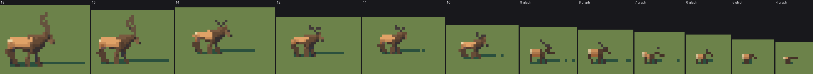
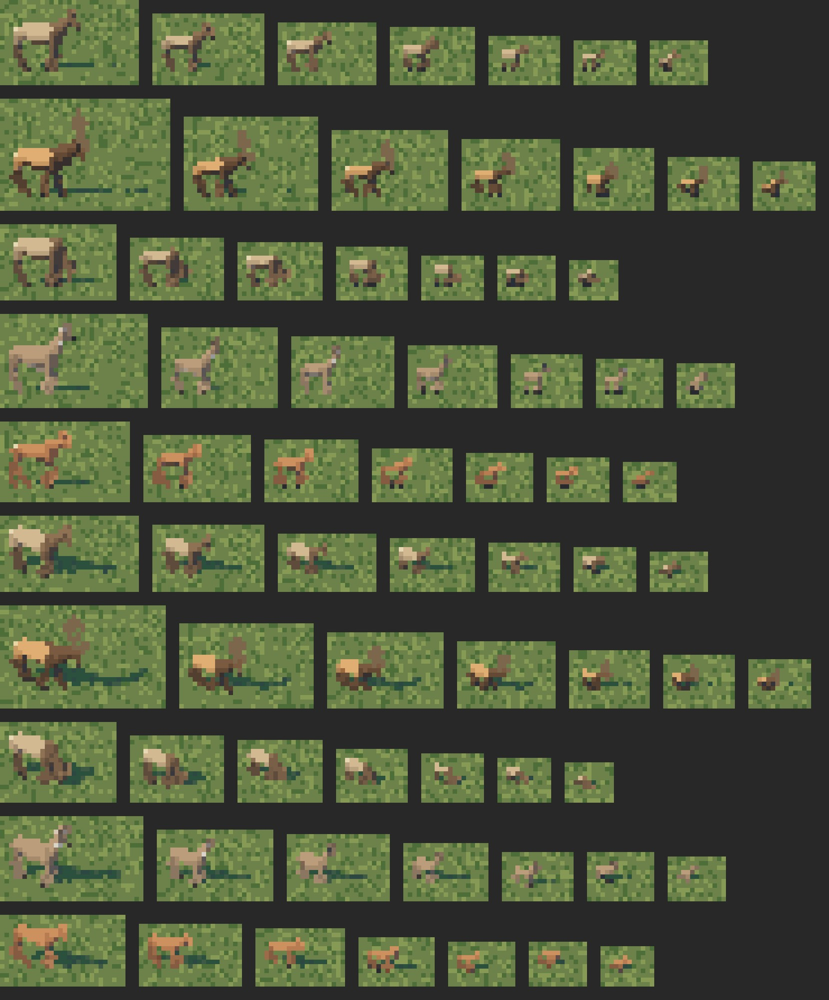
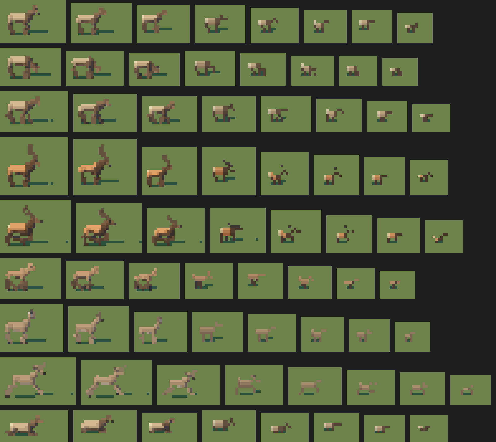
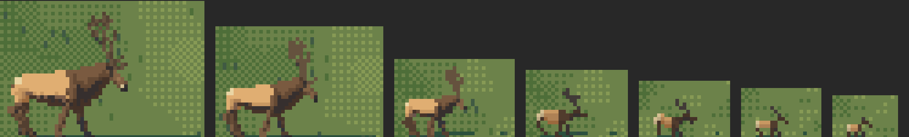
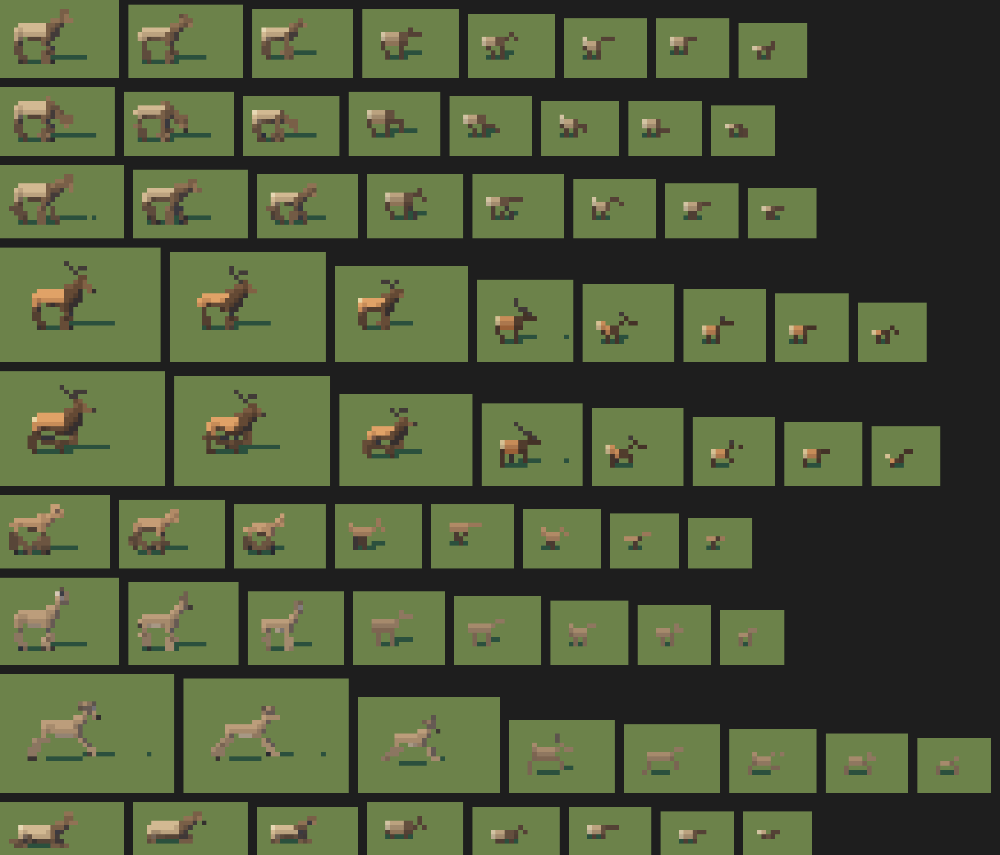
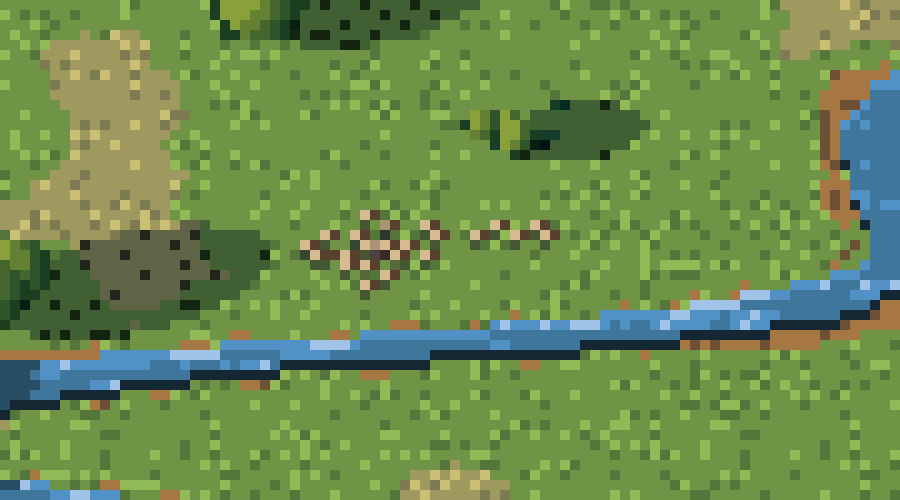
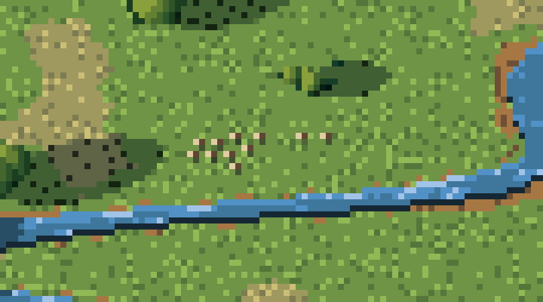

6. Small figures: stop rendering, start placing
Back to the tutorial. Code: micro.py, paint.paint_index (the handoff), context.dot in ~/work/pixelart-studies/elements/deer-elk/src/.
Most animals in a game are small. Across a meadow or from the air, a Roosevelt elk is 4 to 16 px long, and at 1 km it's a pale dot. This is the tier that matters most for a sim, and it's the one where the thing I'd built for 60 px failed completely.

fig. One walking bull from 18 px to 4 px, 9×. From 18 to 10 px the splat renderer draws it (with the glyph antler below 16); from 9 px down the glyph painter places it.
Why the renderer fails
Rendering a 3-D body into 8 pixels by area-averaging is what a camera does, and a camera's 8 px elk is a smudge (the photo column of the size board says so). With supersampling, legs merge into a block and antlers into a smear:

nb043. The splat renderer at 16, 12, 10, 8, 6, 5, 4 px. The grazing cow (third row) is a lump by 10 px.
It took me too long to see that this isn't a tuning problem. A pixel artist at 8 px doesn't average an elk; he places one: a body, four legs, a neck, a head, maybe an ear. So below the handoff I stopped rendering and wrote a painter that places pixels from the same rig's keypoints.
The glyph painter
micro.paint takes the same tubes the renderer would, projects a handful of points, and draws:
The body, one column at a time. For each pixel column, the torso's projected top and bottom from rings of surface points; then the rules that made it read:
# small figures carry a heavier body than the photo: legs read long when rounded
t, b = int(round(top - 0.15)), int(round(bot + 0.6))
# the far read is a body mass about as deep as the legs are long: at glyph sizes that is
# ~0.55 of the shoulder height in rows
hpx = size_px / 1.62 * (1.0 if ind.age != "young" else 0.85)
target = max(minrows, int(round(0.55 * hpx)))
for cx, (t, b) in list(cols.items()):
if b - t < target:
cols[cx] = (b - target, b)
# knock off corners at >= 9 px: first and last column lose their top row
The zones, along the body: for an adult elk, the rear 18% is the pale rump (its bottom row dark, the thigh border), the front 28% is the dark cape; everything else body colour. Top row in the sun (step 4), bottom row in shade (step 2) when there are three or more rows. That's the naturalist's far read, laid out by hand.
Legs, per pair: the near leg as a clean 1-px run from the belly to the hoof; the far leg only when its hoof is at least 1.6 px from the near one (a walking or running animal), one step darker. The carpus and hock kinks only at 12 px and up:
for key in ("F", "H"):
near, far = sorted(pairs[key], key=lambda t: t[0]) # by depth
drawn = [near] + ([far] if abs(near_hoof_x - far_hoof_x) >= 1.6 and size_px >= 6 else [])
chain = [belly_point] + ([elbow, knee] if size_px >= 12 else []) + [hoof]
Neck and head: 1-px runs from withers to poll and poll to nose; a jaw pixel under the first half of the head at 9 px and up; the neck doubled at its base at 10 px and up (a bull's mane doubles it all the way). Below 7 px, just a nose pixel.
The ear tick: one pixel up from the poll at 8 px and up. Without it the elk glyph's head was a gun barrel on a table.
Antlers: see below. Deer: an ear tick along the near ear's line; a flagged tail as a pale run.
The rules, each with the bad image that found it
Body depth. I printed a 12 px glyph as characters to see what was really there:
.............D.............
....PBBBBDD.D.D............
...PPBBBBDDD...D...........
....LBBBBDDD...............
....L.....L................
....L.....L................
.....L....L................
A 3-row body on 6-row legs. The photo-true torso rounds to too few rows; legs round long. The glyph beside the splat renderer's 3-row body at 10 px looked like a table on stilts. The 0.55 H body-depth floor fixed it:


nb098, nb099. The glyph study on flat ground at 10×, before and after the depth floor. Columns: 13, 12, 10 px (renderer), then 8, 7, 6, 5, 4 px (glyphs). Rows: cow standing, grazing, walking; bull standing, trotting; calf; doe; buck bounding; cow bedded.
The antler that leans. At 10–16 px the renderer's antler was a thick crooked bar, and at 13–10 px my critic said the bull "reads as a llama or giraffe". A vertical run reads as a horn, a pole or a neck. The glyph antler, used by both painters below 16 px:
def glyph_antler(ind, tubes, P, depth, size_px, front_right, mat, step, part, ti, max_h=None):
back = -1.0 if front_right else 1.0
if size_px >= 8:
for bt in beams[:1] if size_px < 11 else beams[:2]:
base = P(bt.c[0])
L = min(len(beam in px), max_h); L = max(L, 2.5) # max_h = 1.5 body depths
a = np.radians(48)
tip = base + np.array([back * np.sin(a), -np.cos(a)]) * L # 48 deg back from vertical
mid = base + (tip - base) * 0.5 + np.array([back * 0.3, 0])
_line(base, mid); _line(mid, tip)
if size_px >= 10:
fwd = np.array([-back, -0.8]); fwd /= np.linalg.norm(fwd)
_line(mid, mid + fwd * max(1.5, L * 0.45)) # one tine forward
elif ind.species == "elk" and size_px >= 6:
_put(base + [back, -1]) # a single dark pixel
# below 6 px: nothing. An antler pixel there reads as a second head.


nb076, nb107. The bull at 30, 24, 16, 12, 10, 8, 6 px while the renderer still drew antlers down to 14 px: the crooked bars at 24 and 16 px are the llama. Then the glyph study after the glyph antler took over below 16 px (its first, too-short version: I later let it grow to 1.5 body depths).
Antler economy above that. Between 16 and 30 px a full rack of 1-px tines is scribble: keep the near beam, the long trez tine and, from 20 px, the brow tine.
Back light. Small figures against a low sun are dark silhouettes with the sun's colour along the top edge, broken (light).
Where the handoff goes
I started with the handoff at 14 px. The glyph study showed that from 10 to 13 px the renderer's masses read as a heavy animal and the glyphs as stick figures, while below 10 the glyphs were cleaner. So I rendered everything with the handoff at 6 (MICRO=6 in the environment), compared cell by cell against the glyph version, and moved it to 10 px. Put the handoff where the two painters agree most. Both carry the same zones, both draw legs as 1-px runs, and both use the glyph antler below 16 px, so nothing pops across it (fig/handoff_bull above).

The final glyph study.
The dot: 1–2 px
On the aerial student's river valley at native 320×180, an elk is about 1.3 px long. Three attempts:
- a pale pixel, a dark front pixel, a shadow, placed straight from the herd layout: the herd overlapped into brown scribble (nb090);
- single cream pixels: the critic said "daisies or gravel" (nb091);
- two pixels, pale rump behind a dark front, a 1-px shadow tick, and no two animals touching:
def dot(img, x, y, ind, heading, rng, taken):
fx = 1 if np.cos(np.radians(heading)) >= 0 else -1
if taken[y - 1:y + 2, min(x, x + fx) - 1:max(x, x + fx) + 2].any():
return # dots never touch
img[y + 1, x + 1] = darken(img[y + 1, x + 1], 0.66) # the shadow tick
if ind.age == "young":
img[y, x] = (140, 100, 72); return # a calf: one mid-brown pixel
img[y, x] = (226, 204, 162) # the pale rump
img[y, x + fx] = (96, 70, 50) # the dark front, toward the head



nb090, nb091, final. The last one reads as animals because it's the far read at its absolute limit: dark front, pale back.
Where it stops
The weak cells are where the far read has nothing to hold on to: the grazing cow at 8–6 px (the head down merges with the forelegs: "a pig or a table"), the calf at 6–4 px (a T), and deer on grass at 8–4 px, nearly invisible. The naturalist says a blacktail at that range is "visible only moving or on snow", so the last may be true, but a game may want one more pale pixel. For the grazing cow I'd try placing the head pixel one column ahead of the near forefoot always, whatever the rig says.